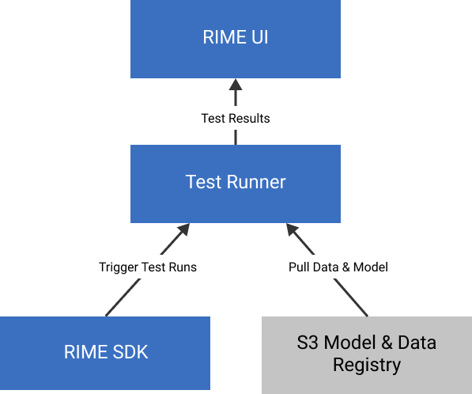

Overview
RIME Team version deploys a Test Runner on a customer kubernetes cluster, which enables users to run numerous tests simultaneously from various environment. This section outlines the architecture and key components of RIME Team.
Architecture
RIME has designed its service such that:
Data remains in your environment and never leaves to Robust Intelligence cloud. In particular, no individual data records or PII are ever exposed to Robust Intelligence.
Connectivity to S3 and other storage is never exposed externally to Robust Intelligence environment.
To accomplish these goals, Robust Intelligence uses the following architecture, allowing customers to install RIME in their own AWS environment and run AI Stress Testing in a scalable manner:
RIME AWS Cluster Requirements
For Installation/Upgrades:
IAM
Provision roles for various RIME services. These services include:
Service that pulls data from s3
Service that builds images and pushes to ecr
Service that autoscales cluster nodes by changing autoscaling group targets
Service that adds records into route53 for external access
EKS/EC2/ELB
Create cluster, create groups of nodes(autoscaling group) for cluster, and provision load balancers to connect to cluster externally.
Route53/ACM
Aforementioned service adds records into route53 for external access to api/cluster services. Also need an ACM certificate to validate the rime domain.
VPC
The EKS cluster is located in a VPC for security. This ensures that only certain resources are exposed externally and keeps RIME services protected.
Secrets Manager
On installation, a RIME engineer will provide several secrets that will be used in the installation process.
S3
To run model tests in the cluster, we need to a bucket for data/models. The model-tester service will have iam permissions to pull only from this bucket.
User permissions for day to day use of RIME:
EKS
Needed to inspect cluster, etc. This is optional(typically only an IT person may need this).
S3
Add data to s3 so that it can be fetched by the model tester. A data scientist can still run the engine on local datasets/models if needed as well.
Deployment requirements
The test runner, the RIME UI and various related backend components are deployed using a Terraform module. Your cloud admin is typically required to run the Terraform commands to install the cluster. This typically takes about 2 hours of cloud admin’s time.
Components of RIME Team
A Kubernetes cluster which contains the test runner, RIME backend, RIME frontend and other microservices that support the service.
A storage for persisting the test runs. Automatically backed up to your cloud bucket.
Okta authentication layer for the RIME UI.
Connector for the test runner and S3 buckets.
[Optional] Datadog agent that monitors cluster and application health.
Operating RIME Team
RIME Team requires little to no operations once deployed. Occasionally, Robust Intelligence will release fixes, improvements and other upgrades. Most upgrades only include code changes, and will be performed fully automatically. In the uncommon case infrastructure upgrades are required, the Robust Intelligence team will reach out with precise instructions, requiring a very quick deployment process by one of your AWS admins.